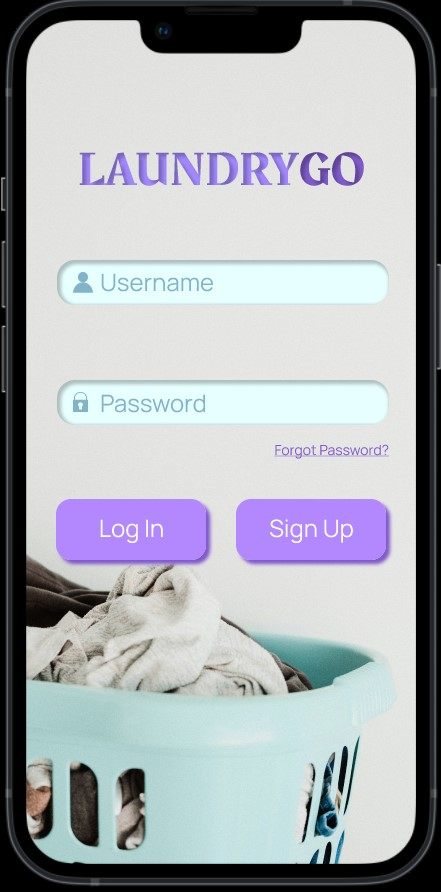
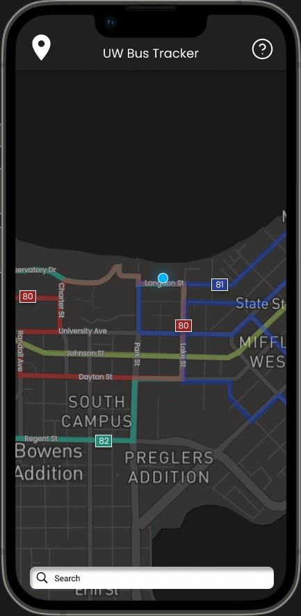
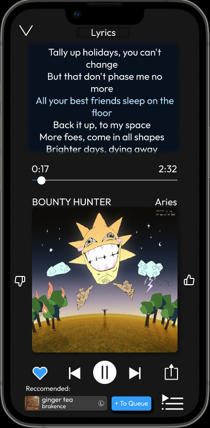

Interactive app prototypes I designed in Figma across UW–Madison design and HCI courses.
Each of these started from a real problem and some user research, then turned into a clickable Figma prototype. They're where I got comfortable with interaction design and thinking through a flow before writing any code.

My first Figma project, for LIS341 (Intro to Interactive Design): a mock on-demand laundry service, designed with two teammates.
Open in Figma
From CS571 (Intro to HCI). After surveying students about Madison's bus system, my partner and I prototyped a live bus-tracking app.
Open in Figma
A streaming-service concept that blends the best of Apple Music and Spotify with a bigger social layer.
Open in Figma